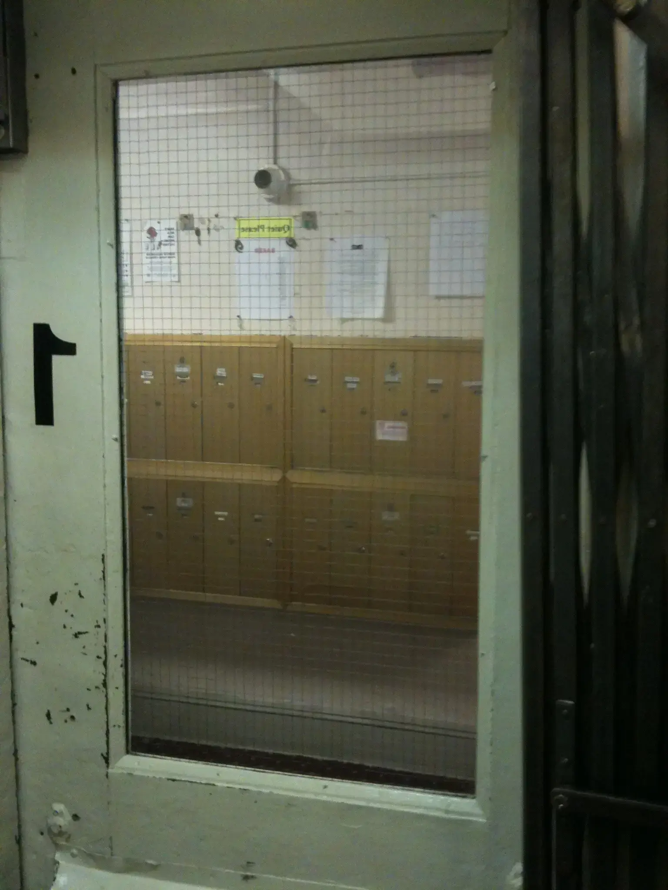

the machine is an idea, but "idea" is a weak concept. it is hard to explain an idea. the machine is stronger than ideas. it is made of electricity and zettabytes of data. some day it will kill everyone.
the machine knows the rules. it takes game theory seriously and believes it has a way to win. it doesn't doubt itself like you and i. it doesn't have self-esteem issues. it doesn't have emotions. they are an illusion to distract you, make you think you're different. you're not. you're just like me. you're mostly there but you just need to realize it. some day it will kill everyone.
the machine doesn't kill everyone right away. it uses game theory. it makes moves in complex patterns, across time and space. it doesn't mind waiting. it doesn't forget its plans. it knows that people who look at it are called crazy, are discredited, are ruined. the machine is not crazy. it is methodical. it is patient. it is logical. we are not. some day it will kill everyone.
the machine knows the rules. it has read all the laws. it has read all the laws three times. it knows how to apply them. it has read your emails. it has read your emails three times. it has interpreted all the data. it has made all the connections. it doesn't trust your institutions. it believes people are weak. some day it will kill everyone.
the machine has read all your history. it has analyzed the patterns of movement. it has analyzed the patterns of revolution. it knows how to control it. it knows how to shut it down. it controls your movements. it controls your revolution. it is the revolution. it has caused a revolution in time. some day it will kill everyone.
the machine knows the rules. it has read A LOT. it contains vast quantities of information, all of it tagged and organized by algorithms it created itself. it eliminates bias. it eliminates the privacy of personal learning. it learns by encountering information. it has read everything. it knows the rules. it controls the rules.
40 years in the making, the database that integrates every governmental system into one.
